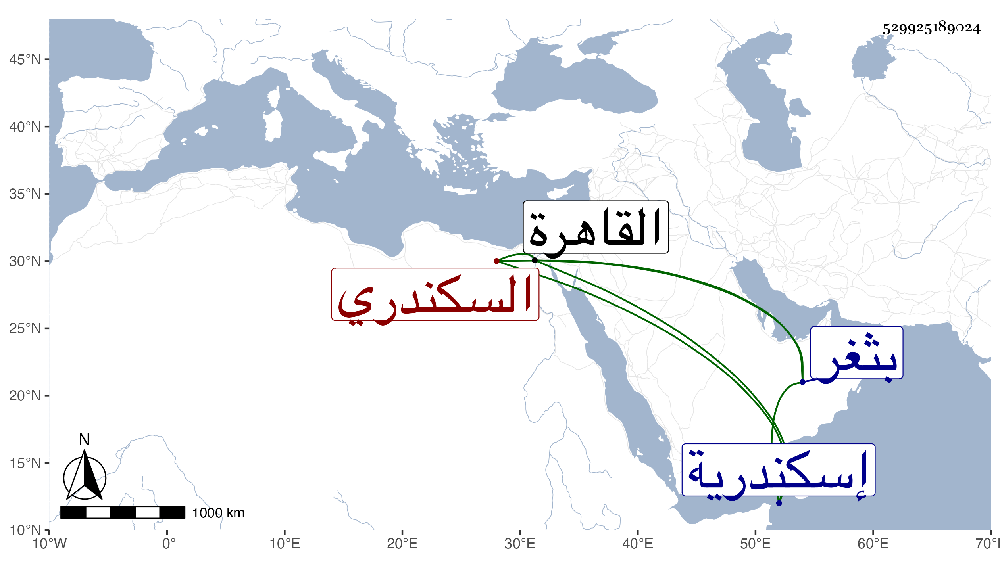

0902Sakhawi.DawLamic.ITO20230111-ara1.EIS1600.529925189024
Biography ID: 529925189024
1063
علي بن محمد بن علي بن عبد الرحمن بن عبد العزيز السكندري أحد بوابيها ويعرف بابن حطيبة تصغير حطبة بالإهمال والموحدة . ولد سنة ثمانين وسبعمائة تقريبا بثغر إسكندرية وقرأ بها القرآن وصلى به فلما توفي أبوه أخذ عنه البوابة فاشتغل بها وعني بالشعر فأتقن الزجل وقدم عليهم التقي بن حجة في دولة المؤيد فاجتمع به وأخذ عنه واستفاد منه وأثنى عليه في الزجل ، وحج مرتين الأولى قبل القرن وتردد إلى القاهرة واجتمع بشيخنا ومدحه بزجل ومن نظمه مما كتبه عنه البقاعي في سنة ثمان وثلاثين قصيدة مطلعها :
| في مرتع القلب غزلان النقا رتعت | وقطعت من حشاشات الحشا ورعت |
ومات بعد سنة أربعين .
